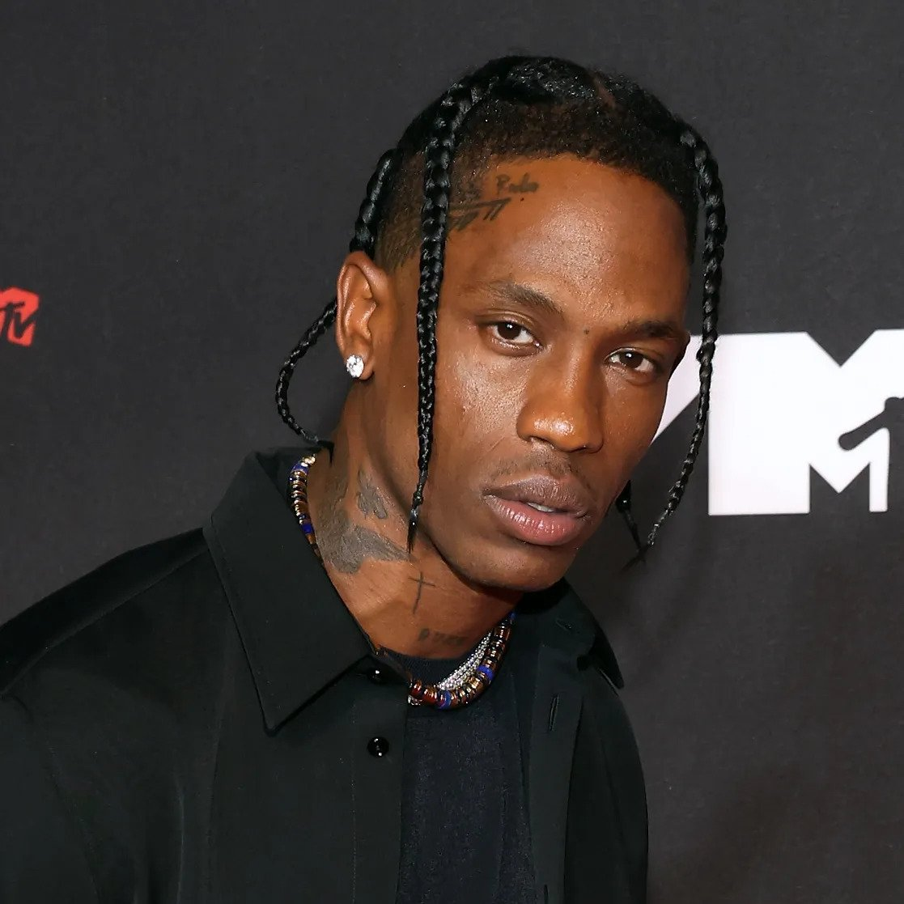

Wie is Travis Scott?
Travis scott of te wel Jaques Bermon Webster II, is een amerikaanse artiest die uit Houston texas komt. Zijn artiesten naam is geïnspireerd door een andere artiest genaamd Kid Cudi, of te wel Scott Mescudi, daarom de Scott in Travis Scott. Travis Scott zelf is hip hop artiest, net als Kid Cudi. Travis heeft in 2012 zijn eerste major deal getekend bij Epic Records. En een publishing deal met Kayne West's GOOD music record label. Bij die twee labels Heeft hij in 2014 zijn debut studio album uitgebracht genaamd Rodeo, dit was een vervolg van Days Before Rodeo die in 2013 uit kwam. Dit album was zeker geen flop, want door zijn lied genaamd Antidote die op het album stond, heeft hij een award gewonnen genaamd de BET Hip Hop Award. En zo is zijn carreer eigenlijk begonnen. Hier onder zie je travis scott.
Publish deals
Inmiddels heeft travis veel publish deals kunnen ondertekenen waaronder met Air jordan, Nike, Mc donalds, Fortnite, Reeses puffs en veel meer. Ook heeft Travis Scott een eigen record label genaamd Cactus Jack. Hij heeft onder die naam, een paar sneakers uitgebracht en een paar liedjes. Een van zijn meest populaire liedjes zijn die je hier onder ziet met de aantal streams die op dit moment vast staan op spotify.
Er zijn 3 top liedjes waarmee hij de meeste streams heeft behaald op spotify. Op nummer 1 staat Goosebumps met een totaal streams van 1,832,534,075 streams op spotify. Op de tweede plek staat Sicko mode met een totaal streams van 1,734,095,628 streams op spotify en als op de derde plek staat Highest in the room met totaal streams van 1,244,154,280 streams. Mijn persoonlijke favoriete liedje van hem staat niet in de top 3, het favoriete liedje van mij heet MAFIA. De reden waarom dat mijn favoriete lied van hem is, is omdat ik vind dat de beat goed is, en de flow van het lied vind ik nice.
Zoals je ziet zijn zijn liejdes heel veel gespeeld op spotify. Travis Scott heeft zelf ook meerdere sneaker uit gebracht met zijn designs, waaronder air forces, Air jordans en nike SB en nog veel andere sneakers. De sneakers zijn meestal super populaire onder de mensen waardoor ze voor veel geld door verkocht worden op de resell market. Hier onder zie je naast elkaar de sneakers waarover ik het had. Elk schoen die je hierzo ziet worden voor 1000 euro plus verkocht op de resell market, zoals stockx, goat en restocks.
Festivals
Travis Scott staat ook onder andere bekend zoals festivals, omdat hij een van de grootste artisten is van de planeet heeft die ook een grote fanbase die fanatiek met zijn muziek mee viben, misschien zelfs te fanatiek. Hij staat om bekend dat hij extreem goed kan performe, en ik zelf heb het kunnen mee maken terug in 2019 toen die op WooHah 2019 als headliner op het festival kwam. En de geruchte waren geen grap want het was een van de beste performes waar ik naar toe ben gegaan. Het was ook nog chaos gelukkig stond ik ergens veilig. Zie hier een video van travis zn optreden op woohah 2019.